NHẬT KÝ THỰC HÀNH: THAO TÁC CƠ BẢN VỚI TỆP TIN VÀ THƯ MỤC
Phần thực hành được trình bày theo đúng tiến trình thao tác trên Windows. Mỗi mô tả nằm ngay trước hoặc đi cùng ảnh minh chứng tương ứng, giúp theo dõi rõ quá trình tạo thư mục, tạo tệp, sao chép, di chuyển, xóa và khôi phục dữ liệu.
01
Mở File Explorer từ thanh tác vụ.
02
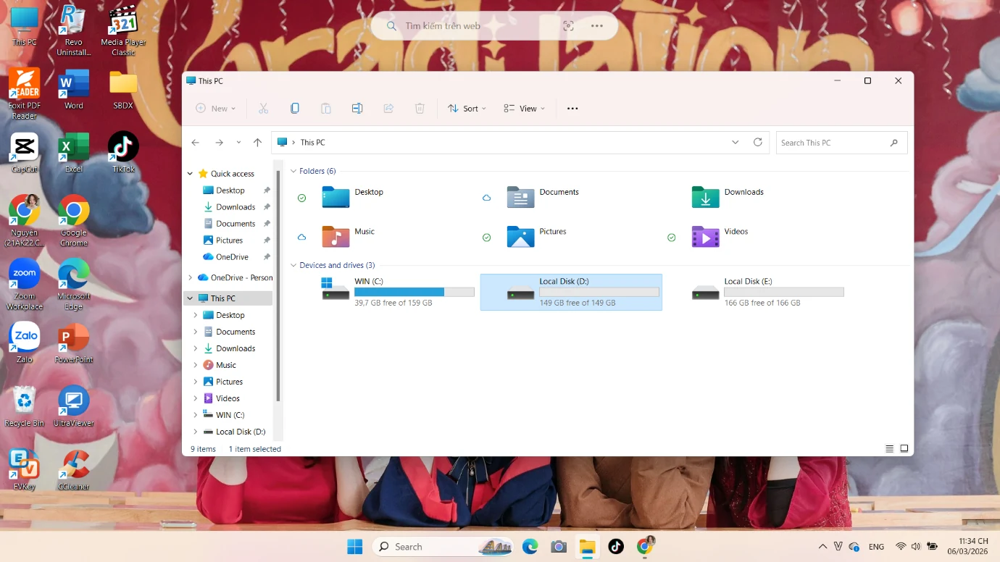
Truy cập This PC và kiểm tra các ổ đĩa.
03
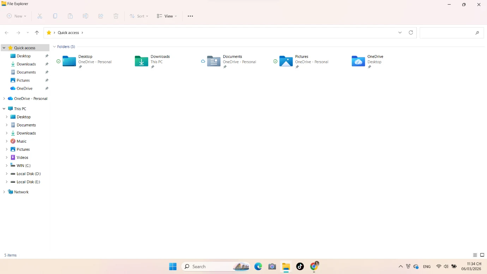
Mở ổ đĩa dùng cho bài thực hành.
04
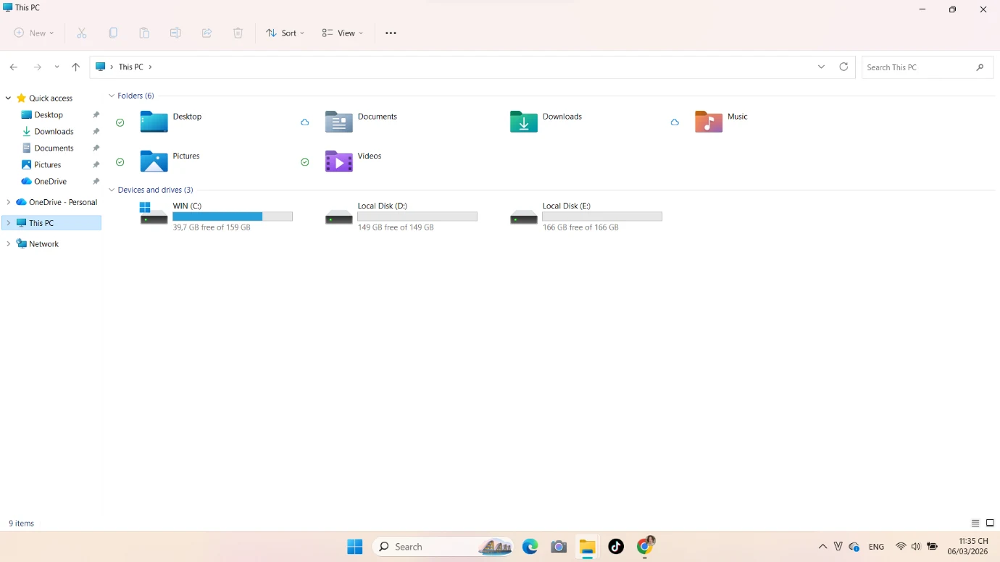
Xác định vị trí lưu thư mục thực hành.
05
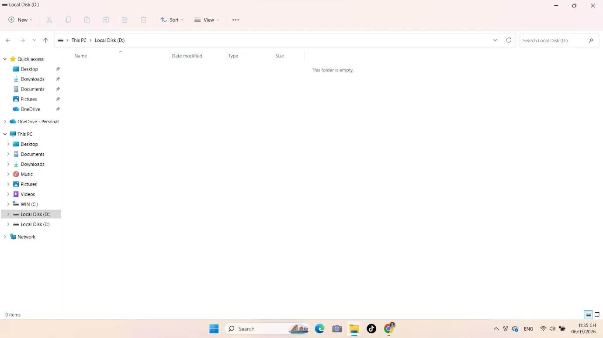
Tạo thư mục mới cho bài thực hành.
06
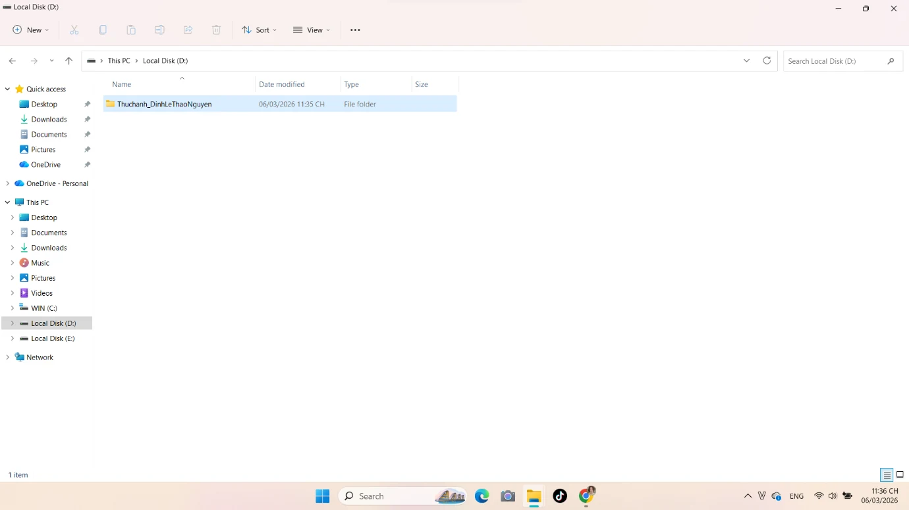
Đặt tên thư mục ThucHanh_DinhLeThaoNguyen.
07
Mở thư mục thực hành vừa tạo.
08
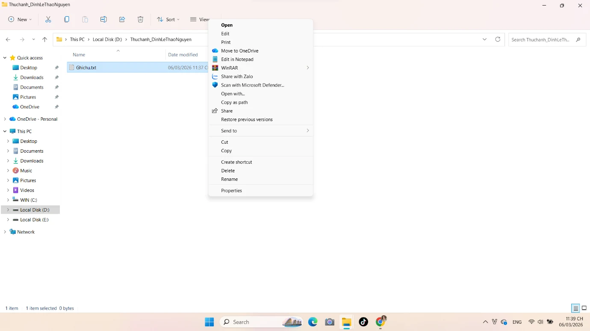
Tạo tệp văn bản mới bằng menu New.
09
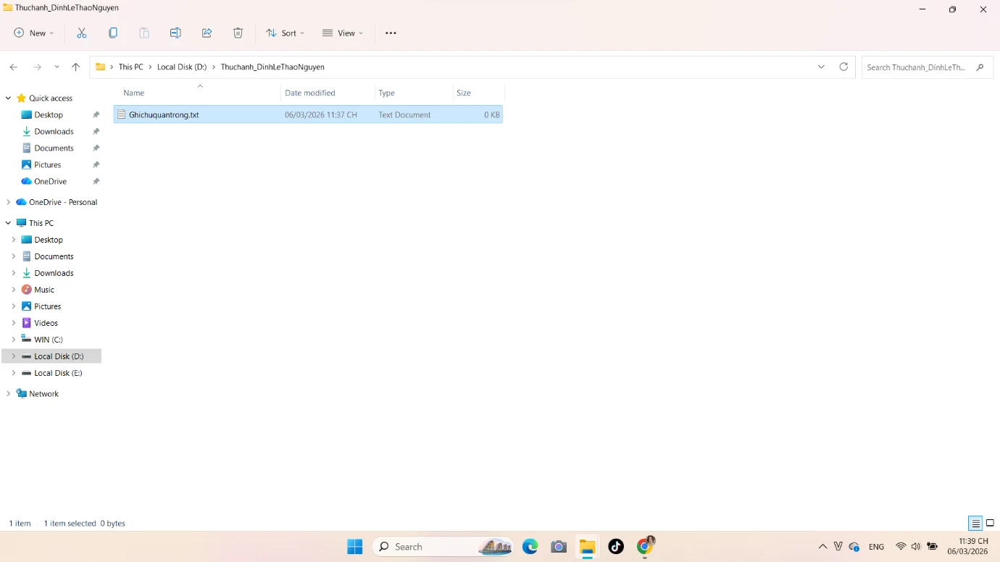
Tệp GhiChu.txt đã được tạo.
10
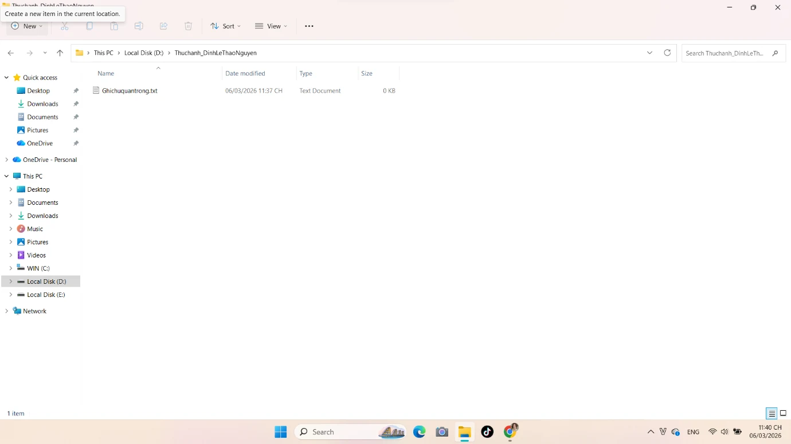
Mở thư mục con TaiLieu.
11
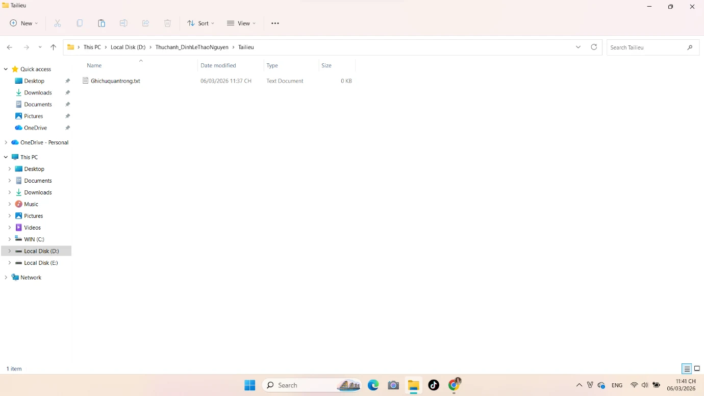
Kiểm tra nội dung thư mục TaiLieu.
12
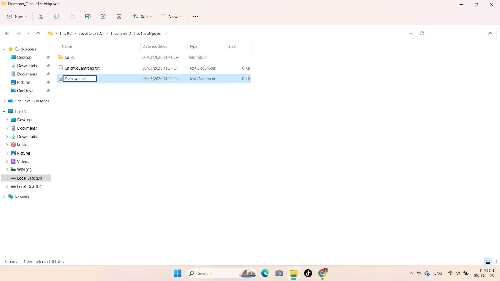
Tạo thêm tệp DiChuyen.txt để thực hành Cut & Paste.
13
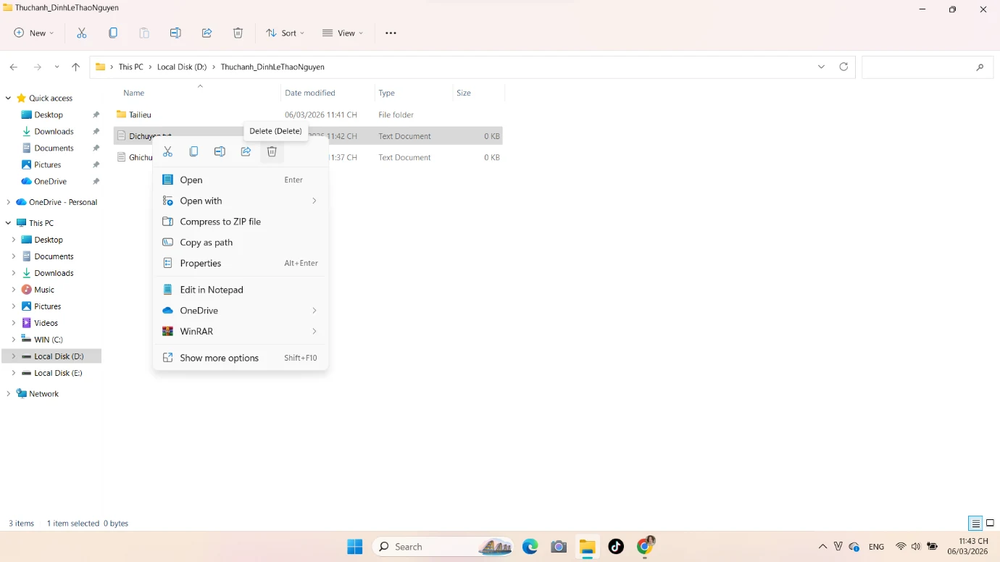
Sao chép tệp GhiChuQuanTrong.txt.
14
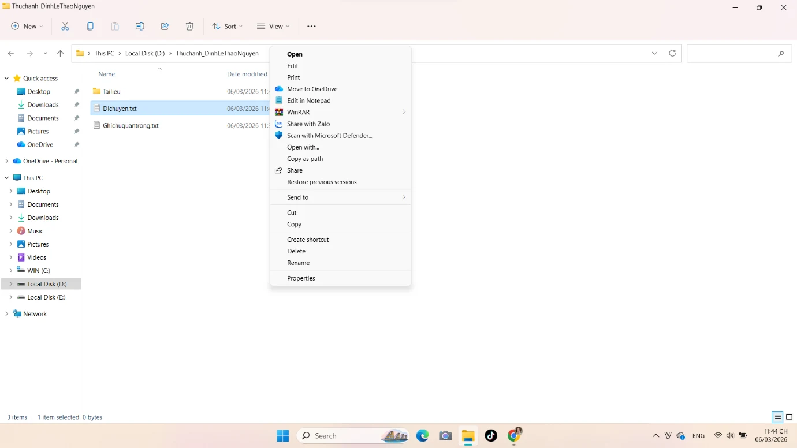
Thực hiện thao tác Cut với tệp DiChuyen.txt.
15
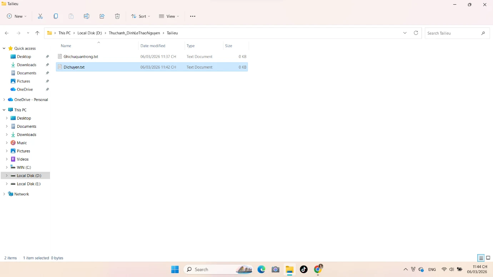
Kiểm tra tệp sau khi di chuyển vào TaiLieu.
16
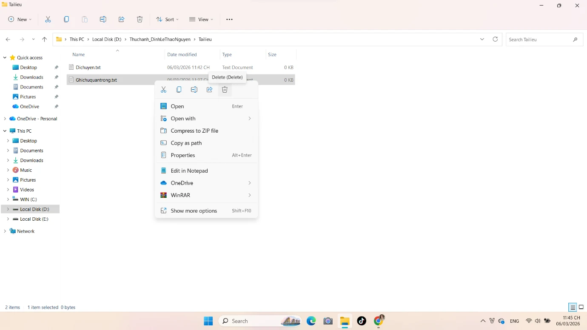
Thực hiện lệnh Delete đối với tệp đã chọn.
17
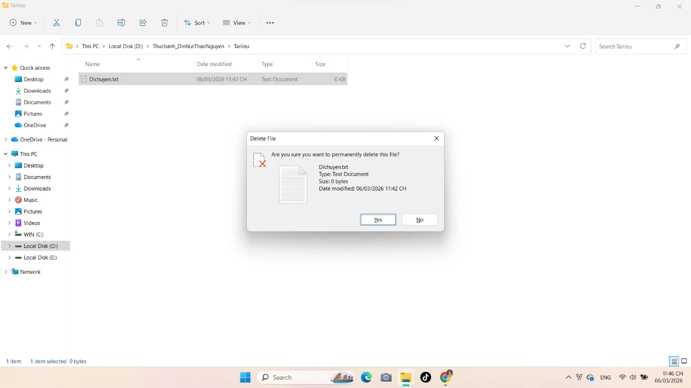
Xác nhận cảnh báo xóa vĩnh viễn bằng Shift + Delete.